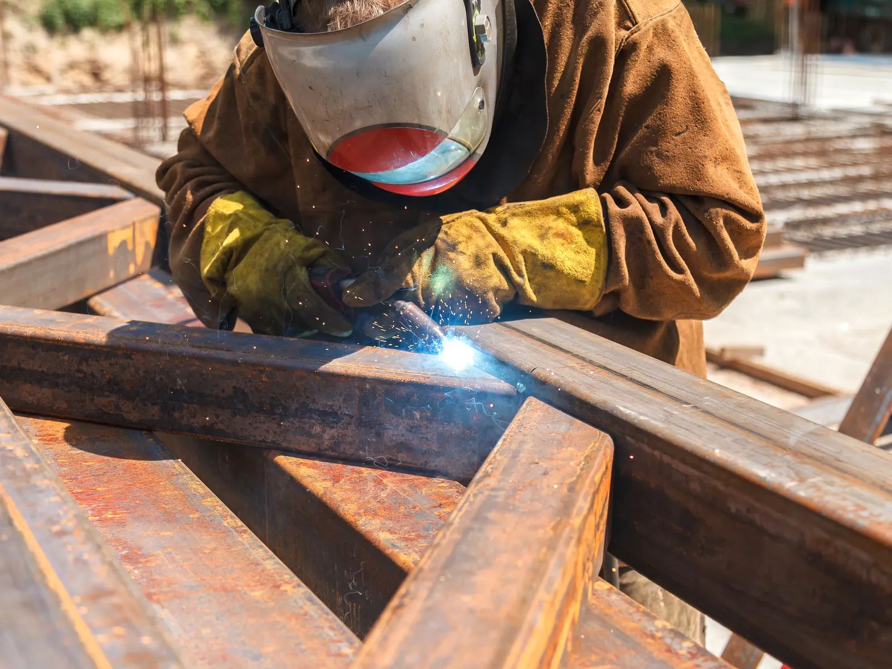
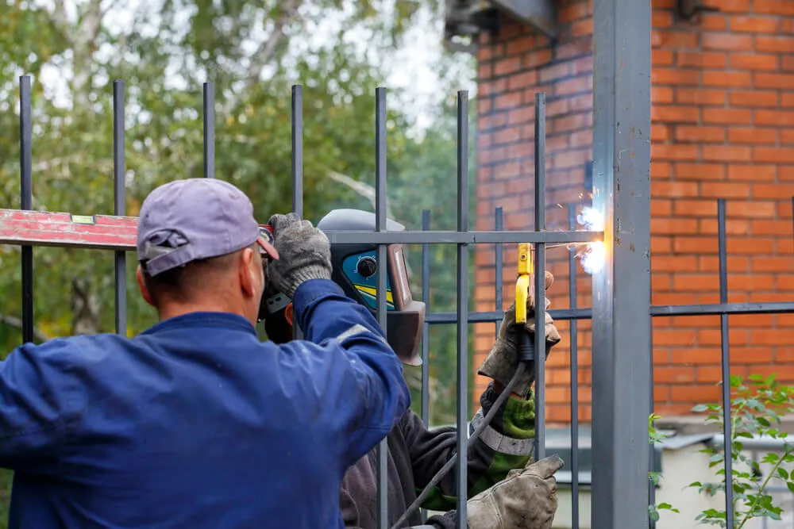

Home · Service Areas · St. Rose
Mobile Welders in St. Rose, LA
At Big Easy Mobile Welders, we haul a fully equipped mobile welding unit out to St. Rose for gate, fence, railing and custom metal jobs at homes and businesses. Licensed, insured welders on our team handle steel, aluminum and stainless on site, so nothing has to be hauled away.

We come to the jobWhat Does a Mobile Welding Visit in St. Rose Include?
Each mobile welding visit includes a no-obligation free estimate, a trained welder who shows up in a fully equipped unit, joint prep with brushes and grinders, the weld itself and a closing walkthrough, all priced in the open, with nothing hidden and easy payment.
A Free Look at the Job
We assess the metal and the damage and give you a no-cost quote before any work begins.
Seasoned Welders
Every welder we send is licensed, insured and highly trained, with experience going back more than 20 years.
Equipment on Board
Our fully equipped mobile unit hauls the welding machine and tools to your driveway, yard or job site.
Surface Prep
Brushes and grinders remove rust, old coating and mill scale so the weld goes onto clean metal.
Three Common Metals
Mild steel, aluminum and stainless steel are all on our list, for repairs small and large.
Backed After the Job
You get a walkthrough of the finished work, which carries our satisfaction guarantee, and we stay on call for questions.

What Brings St. Rose Property Owners to a Mobile Welder?
Property owners in St. Rose usually reach out when a gate, fence, railing or trailer stops working the way it should: swing gates sag, fence posts break loose at a weld, step rails corrode and utility trailers crack at the tongue. Shops and yards also call for custom brackets and frames.
- Swing Gate Off Its Latch
- Broken Fence Post Weld
- Corroded Step Railing
- Loose Mobile Home Stair Rail
- Cracked Trailer Tongue
- Snapped Hitch Bracket
- Rusted Carport Frame
- Custom Bracket for a Shop
Which Welding Jobs Can We Handle in St. Rose?
Our mobile welding team handles gate, railing, fence, pipe, arc and custom welding on your property, plus window frame fixes, specialized work and fabrication. Only our own welders handle the work, and a free, no-obligation quote always comes first, before any welding starts.

Pipe Welding
Pipe and pipeline repair on site, with stick and gas-shielded processes matched to the pipe.
View pipe welding →
Fence Welding
Fence repairs and custom fence fabrication, with the material and process chosen for your fence.
View fence welding →
Gate Welding
Gate repairs and custom gates in steel or aluminum, with materials and tools covered in your estimate.
View gate welding →
Iron Railing Welding
Custom indoor and outdoor railings for stairways, decks and balconies, built to fit your property.
View railing welding →
Arc Welding
Shielded and non-shielded arc welding for commercial and residential customers.
View arc welding →
Custom Welding
Custom ironwork, estimated before we start so we arrive with the right equipment for the job.
View custom welding →
What Tells You a Metal Repair Needs a Welder in St. Rose?
A metal repair in St. Rose needs a welder when a joint has cracked, a part has broken off or rust has thinned the steel enough to flex. Bolts, wire and epoxy may hold for a while, but a load-bearing piece like a gate frame or trailer tongue needs a proper weld to stay safe.
Temporary Fixes Failing
Wire, clamps or glue holding a gate or rail together are a sign the joint needs to be welded properly.
Flex Under Load
If a trailer tongue, step rail or bracket bends or creaks when weight goes on it, the metal or weld may be fatigued.
Thin, Pitted Steel
Deep pitting or holes from rust mean the metal has lost thickness. That stretch may have to be cut away and replaced first.
How Does Housing in St. Rose Shape Welding Work?
Housing in St. Rose shapes welding work because most homes are owner-occupied detached houses, many built in the 1980s and the 2000s, and about one in seven units is a mobile home. That means gates, fences, porch and step rails and trailers are the metal most properties have.

Census figures point to the metalwork found on most properties here.
- Mostly Detached Homes.Single-family detached homes make up 67.6 percent of the community's 2,931 housing units, according to 2020 to 2024 American Community Survey estimates from the Census Bureau.
- Many Mobile Homes.Mobile homes account for another 14.9 percent of units, and their stairs, rails and frames are often steel.
- Built in Two Waves.About 28 percent of homes date to the 1980s and another 27 percent to 2000 through 2009, per the same survey.
- Mostly Owner-Occupied.Owners live in 75.6 percent of occupied homes. In humid weather a coated weld holds up better, as our guide on protecting welded metal from corrosion explains.

Why Choose a Mobile Welder Over a Shop in St. Rose?
A mobile welder spares you from loading a broken trailer, gate or railing and hauling it to a shop in another town, because the equipment comes to it. Our business is locally owned, has welded across the New Orleans region for many years and keeps helping after each job.
Local Ownership
Local owners run our company, and we have welded around New Orleans for years.
No Hauling
With a fully equipped mobile unit, we weld trailers, gates and rails right where they sit.
Licensed and Insured
Highly trained, licensed and insured welders take on every job.
Honest Quotes
You get free, no-obligation estimates, transparent pricing and simple ways to pay.
What Are the Four Stages of Mobile Welding in St. Rose?
Mobile welding in this community runs in four stages: a free estimate you ask for by phone or online, a weekday visit booked once the price suits you, prep and welding at the property, and a joint review of the finished weld before we leave, with support continuing after that.
Send the Details
Call (504) 370-2757 or describe the job through our website form.
Set a Weekday Time
Once the price is approved, pick a visit Monday through Friday, 8 AM to 3 PM.
Weld It in Place
The welder parks beside the work, grinds the joint clean and finishes the repair on the spot.
Look It Over
We review the weld with you and stay reachable if questions come up later.
 The rig comes to you
The rig comes to youWhat Should You Have Ready Before a Welder Comes to St. Rose?
Before a welder comes to St. Rose, have a rough idea of the metal involved, a clear spot for the mobile unit to park near the work, and a decision on whether you want a repair or a new piece. For trailers, note the load each one carries so the repair suits how it is used.
Trailers and Hitches
Tell us the trailer's size and use. Our article on choosing the right welder for trailer repair covers what matters.
Parking and Access
Leave room near the work for the mobile unit, open locked gates and keep pets inside during the visit.
Fix or Fabricate
A repair and a new custom piece are quoted differently, so mention which one you want.
Where Else Do Our Mobile Welders Work Near St. Rose?
Beyond St. Rose, our mobile welders head to Kenner, LaPlace, Metairie, New Orleans, Gretna, Slidell, Mandeville, Covington, Madisonville, Hammond and Baton Rouge, bringing the same trained welders, the same mobile equipment and the same free, no-obligation estimate to every address.
- New Orleans
- Metairie
- Kenner
- Gretna
- St. Rose
- LaPlace
- Slidell
- Mandeville
- Covington
- Madisonville
- Hammond
- Baton Rouge
Not sure we cover your street?
Request a free estimate or call us, and we will confirm before we book the job.
Where Our Rigs Roll
Schematic, not to scale. New Orleans and the 11 nearby cities we serve.
About St. Rose
This unincorporated community lies along the Mississippi River's east bank, in St. Charles Parish.
A Census Designated Place
There is no city government here. The Census Bureau tracks the community as a census designated place within St. Charles Parish.
Population and Land
The 2020 Census counted 7,504 residents, on about 6.3 square miles of land and 1.1 square miles of water.
Named for a Plantation
According to St. Charles Parish, the community takes its name from St. Rose Plantation, near today's River Road and Louisiana Highway 626.
Things To Do
Free time around here usually means the river levee, a historic plantation or the open land of the spillway.
The Levee
In 2025, St. Charles Parish added benches, bike racks and trash cans along its levees, with three of the new benches in this community.
Destrehan Plantation
Upriver on River Road in Destrehan, the plantation offers guided tours of the main house and an exhibit on the 1811 German Coast Uprising.
Bonnet Carre Spillway
The Corps of Engineers spillway in nearby Norco draws about 250,000 visitors a year for fishing, crawfishing, camping and wildlife watching.
Nearby Suburbs
Neighbors on our service list sit along the river and Airline Highway in both directions.
Kenner
Kenner, the neighboring city downriver in Jefferson Parish, contains Louis Armstrong New Orleans International Airport.
LaPlace
LaPlace lies upriver in St. John the Baptist Parish and counted 28,841 residents in the 2020 Census.
Metairie
Beyond Kenner lies Metairie, which the Jefferson Parish tourism office calls the parish's largest community.
Interesting and Fun Facts
The community's story runs through plantations, an early oil terminal and a new highway.
An Oil Terminal Since 1922
Per St. Charles Parish, Cities Service opened an oil export terminal on the former Cedar Grove Plantation site in 1922, later taken over by IMTT.
A Listed Historic Building
The LaBranche Plantation Dependency, off LA 48 southwest of Kenner in St. Charles Parish, was placed on the National Register of Historic Places in 1984.
Growth Along Airline Highway
The parish credits the construction of Airline Highway in the early 1930s with keeping the community growing.
Public Transportation
Public transit here comes from the River Parishes Transit Authority, which schedules rides by phone with a dispatcher.
- Booking: riders call the RPTA office at (985) 651-1141, where phone lines are open weekdays from 8:30 a.m. to 5 p.m. and Saturdays until 1:30 p.m.
- Schedule changes: the RPTA cut an hour from its evening service in September 2025 and posts current hours and service updates at rptarolls.org.
- Fares: a flat one-way fare paid in exact change, with children 4 and under riding free.
- Who runs it: the River Parishes Transit Authority oversees public transit service for St. Charles and St. John the Baptist parishes.
- Nearest fixed routes: JP Transit's E1 and E201 buses start at Louis Armstrong New Orleans International Airport in neighboring Kenner.
What Is the Best Way to Book a Free Welding Estimate in St. Rose?
For a free welding estimate in St. Rose, dial (504) 370-2757 or complete the form on our site with the metal, the damage and where the piece sits. Mention whether the mobile unit can park close by, and a straightforward price comes back with no obligation and nothing hidden.
Loading the estimate form...
If it does not appear, call us at (504) 370-2757.

What Welding Questions Do We Hear Most in St. Rose?
Residents ask whether a mobile welder comes to the community, whether welding beats bolting, whether painted metal can be welded, whether a welder can fix a carport or mobile home steps, add a fence gate or raise a fence, and where the community lies.
Is there a mobile welder that comes to St. Rose?
Our mobile welders come to homes and businesses in St. Rose with a fully equipped unit, so gates, fences, railings and trailers are repaired on site. Visits run Monday through Friday from 8 AM to 3 PM, and a free, no-obligation estimate comes before any work.
Is welding stronger than bolting?
A good weld is usually stronger and more rigid than a bolted joint, because it fuses the parts into one piece instead of clamping them together. Bolts still have their place where a part must come apart later or where heat would damage a coating, and many gates and frames use both.
Can a welder repair a metal carport?
A welder can often repair a steel carport frame where a post has rusted at the base, a joint has cracked or a brace has bent. Badly corroded legs may need new sections. Carports catch wind, so anchors and connections get checked too.
Can you weld painted metal?
Painted metal should not be welded as it is. Paint burns in the arc, gives off fumes and causes porosity that weakens the weld, so the coating is ground or brushed off around the joint first. Once the weld cools, the bare area is primed and repainted to keep rust away.
Can a welder add a gate to an existing metal fence?
A welder can usually add a gate to an existing metal fence by cutting an opening, reinforcing a post on each side and building a gate to match the bars and style. Both posts must be solid enough to carry the gate's weight.
Can a welder make a metal fence taller?
Many metal fences can be made taller by welding extensions onto the posts and adding a rail or pickets above the old top rail. The posts must be sound enough for the extra height and wind load, and local fence height rules may apply.
Can a welder repair metal steps on a mobile home?
A welder can often repair steel steps and handrails at a mobile home, fixing cracked welds, loose rails and rusted stringers. Steps rusted through may need new treads or a new frame, set level and secured so they do not shift away from the door.
Where is St. Rose, Louisiana?
The community sits on the Mississippi River's east bank in St. Charles Parish, just upriver from Kenner and the Jefferson Parish line. The 2020 Census counted 7,504 residents in this unincorporated place, with LaPlace farther upriver and New Orleans to the east.


Book Your Free Mobile Welding Estimate
Tell us what needs welding, and we will bring the rig to your door anywhere in the New Orleans area.